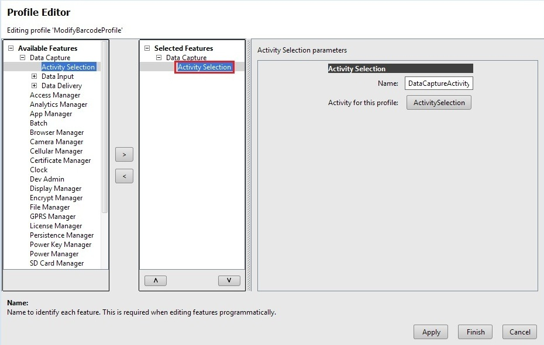
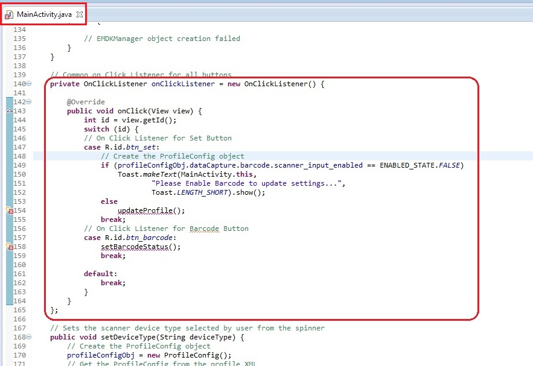

Overview
This guide will walk you through creating an EMDK For Android application that will make use Profile Config object to modify Profile Settings programmatically in order to get barcode data into your application using the KeyStroke output feature of EMDK Profiles.
Note: As of EMDK 6.8, DataWedge can no longer be configured for data capture through Profile Manager. Zebra recommends using the DataWedge APIs instead.
Creating The Project
Note: Provide "ModifyBarcodeProfileTutorial" as the project name for this tutorial.
Start by creating a new Android Studio project.
Adding a DataCapture Profile
Click here to see how to add a specific feature to the Profile Manager.
Provide "ModifyBarcodeProfile" as the Profile Name for this tutorial.
Note: You can provide any Profile Name but make sure to access it with the similar name in the Android code.
Now, you can see all the available features on the left hand side of the Profile Editor window. Select any feature from the list and click "Right Arrow" (Ex: "ActivitySelection" has been selected. By using this feature Activities can be associated with the application. Then the data capture feature will be enabled automatically when the specified activity is in foreground).

Provide the name to identify each feature (Ex: DataCaptureActivity). This is required while editing features programmatically.

Click "ActivitySelection" under parameters.

Specify the applications package name and click "Apply".

Specify an Activity inside the application and click "Apply".

Click "OK".
Select any data capture feature and click Right Arrow (Ex: "Barcode" has been selected).

Click on the "Barcode" feature in the "Data Input" section. The parameter list will be populated.

Provide name to Barcode Scanner Input so as to modify it programmatically (Ex: DataInputBarcode). Enable the feature and change some parameters.


Click "Apply".
Select the Keystroke feature in the "Data Delivery" section and click "Right Arrow" (Ex: "Keystroke" has been selected).

Provide name to Keystroke output (Ex: DataDeliveryKeystroke). This is required when editing the features programmatically. Enable the feature and change some parameters.


Click "Apply" and "Finish".

Click "Close".
Note: Now the "EMDKConfig.xml" is created under "\assets" folder. This file will contain a definition of all of your profiles that you create.
You can inspect the EMDKConfig.xml to see it is reflecting the changes made to the parameters via EMDK Profile Manager GUI earlier. However, it is advised that this file not be manually updated and only be controlled via the Profile Manager.


Enabling Android Permissions
Modify the Application's Manifest.xml to use the EMDK library and to set permission for the EMDK.

You must first enable permissions for 'com.symbol.emdk.permission.EMDK':
<uses-permission android:name="com.symbol.emdk.permission.EMDK"/>Then you must enable the library:
<uses-library android:name="com.symbol.emdk" />When done, your manifest.xml should look like:

Adding Some Code
Now we will start to add some code.
First you must add references to the libraries:
import com.symbol.emdk.*; import com.symbol.emdk.EMDKManager.EMDKListener;Then you must extend the activity to implement EMDKListener.
public class MainActivity extends Activity implements EMDKListener { .. .. .. .. .. .. ...
}@Override public void onClosed() { // TODO Auto-generated method stub } @Override public void onOpened(EMDKManager emdkManager) { // TODO Auto-generated method stub }We will now create some global variables to hold the profile name as well as instance objects of EMDKManager and ProfileManager that we will use throughout the code:
//Assign the profile name used in EMDKConfig.xml private String profileName = "ModifyBarcodeProfile"; //Declare a variable to store ProfileManager object private ProfileManager profileManager = null; //Declare a variable to store EMDKManager object private EMDKManager emdkManager = null;In the onCreate method, we call getEMDKManager so that the EMDK can be initialized and checked to see if it is ready.
// The EMDKManager object creation // The EMDKManager object will be returned in the callback. EMDKResults results = EMDKManager.getEMDKManager( getApplicationContext(), this); // Check the return status of processProfile if (results.statusCode == EMDKResults.STATUS_CODE.SUCCESS) { // EMDKManager object creation success
// EMDKManager object creation failed }} else {So far your code should look like:

Now we need to use the
onOpenedmethod to get a reference to the EMDKManager. The EMDKListener interface will trigger this event when the EMDK is ready to be used. This must be implemented in order to get a reference to the EMDKManager APIs. This event will pass the EMDKManager instance and we assign it to the global variableemdkManagerthat we created in the previous steps. We then use that instance object to get an instance of ProfileManager and assign it to the global variableprofileManager. This is how we will interface with the APIs in the rest of the code:this.emdkManager = emdkManager; //Get the ProfileManager object to process the profiles profileManager = (ProfileManager) emdkManager.getInstance(EMDKManager.FEATURE_TYPE.PROFILE);Note: Sometimes the default parameter in
onOpenedmethod isarg0. So you have to rename that parameter toemdkManager.Now that we have a reference to ProfleManager, we use it to install and activate the profile we built earlier using the
processProfilemethod. We could have also performed this action at a different time, say when someone pressed a button, but we chose to do it as soon as the EMDK was ready:So the
onOpenedmethod now looks like:@Override public void onOpened(EMDKManager emdkManager) { this.emdkManager = emdkManager; // Get the ProfileManager object to process the profiles profileManager = (ProfileManager) emdkManager .getInstance(EMDKManager.FEATURE_TYPE.PROFILE); String[] modifyData = new String[1]; // Call processPrfoile with profile name and SET flag to create the // profile. The modifyData can be null. EMDKResults results = profileManager.processProfile(profileName, ProfileManager.PROFILE_FLAG.SET, modifyData); // Check the return status of processProfile if (results.statusCode == EMDKResults.STATUS_CODE.SUCCESS) { Toast.makeText(MainActivity.this, "Profile initialization Success", Toast.LENGTH_SHORT).show(); } else { Toast.makeText(MainActivity.this, "Profile initialization failed", Toast.LENGTH_SHORT).show(); } }Your onOpened method should now look like this:

Now let's override the "onDestroy" method so we can release the EMDKManager resources:
@Override protected void onDestroy() { // TODO Auto-generated method stub super.onDestroy();
}// Clean up the objects created by EMDK manager emdkManager.release();Your onDestroy method should now look like this:

Now lets add some of the string values in "res/values/strings.xml" that we would be using in our layout files.
<string name="code128_string">Code128</string> <string name="code39_string">Code39</string> <string name="EAN8_string">EAN8 </string> <string name="EAN13_string">EAN13 </string> <string name="UPCE_string">UPCA </string> <string name="UPCE0_string">UPCE0 </string> <string name="button_set_string">Update Settings </string>Remove the default code, inside "res/layout/activity_main.xml".
add the following code, inside "res/layout/activity_main.xml". This code contains some checkboxes that represent some of the barcode types. We will change the status of these barcode types "Enable/Disable" programmatically.
The code also contains a Drop-Down (Spinner) that we would be using to select a specific type of barcode scanner device programmatically.
At the bottom, the layout file contains a button "Update Settings" that is used to apply settings selected by the user.
<ScrollView xmlns:android="http://schemas.android.com/apk/res/android" android:layout_width="fill_parent" android:layout_height="fill_parent" >
</RelativeLayout> </ScrollView><RelativeLayout android:layout_width="match_parent" android:layout_height="wrap_content" android:padding="10dip" > <Button android:id="@+id/btn_barcode" android:layout_width="wrap_content" android:layout_height="wrap_content" android:layout_centerHorizontal="true" android:layout_margin="10dip" /> <Spinner android:id="@+id/scanner_type_spinner" android:layout_width="match_parent" android:layout_height="wrap_content" android:layout_below="@+id/btn_barcode" /> <CheckBox android:id="@+id/checkBoxEAN8" android:layout_width="wrap_content" android:layout_height="wrap_content" android:layout_alignParentLeft="true" android:layout_below="@+id/scanner_type_spinner" android:layout_marginBottom="5dip" android:layout_marginLeft="5dip" android:layout_marginRight="5dip" android:layout_marginTop="20dp" android:checked="true" android:enabled="true" android:text="@string/EAN8_string" /> <CheckBox android:id="@+id/checkBoxEAN13" android:layout_width="wrap_content" android:layout_height="wrap_content" android:layout_alignParentRight="true" android:layout_below="@+id/scanner_type_spinner" android:layout_marginBottom="5dip" android:layout_marginLeft="5dip" android:layout_marginRight="12dip" android:layout_marginTop="20dip" android:text="@string/EAN13_string" /> <CheckBox android:id="@+id/checkBoxUPCA" android:layout_width="wrap_content" android:layout_height="wrap_content" android:layout_alignParentLeft="true" android:layout_below="@+id/checkBoxEAN8" android:layout_margin="5dip" android:checked="true" android:enabled="true" android:text="@string/UPCE_string" /> <CheckBox android:id="@+id/checkBoxUPCE0" android:layout_width="wrap_content" android:layout_height="wrap_content" android:layout_alignParentRight="true" android:layout_below="@+id/checkBoxEAN13" android:layout_marginBottom="5dip" android:layout_marginLeft="5dip" android:layout_marginRight="12dip" android:layout_marginTop="5dip" android:text="@string/UPCE0_string" /> <CheckBox android:id="@+id/checkBoxCode128" android:layout_width="wrap_content" android:layout_height="wrap_content" android:layout_alignParentLeft="true" android:layout_below="@+id/checkBoxUPCA" android:layout_margin="5dip" android:checked="true" android:enabled="true" android:text="@string/code128_string" /> <CheckBox android:id="@+id/checkBoxCode39" android:layout_width="wrap_content" android:layout_height="wrap_content" android:layout_alignParentRight="true" android:layout_below="@+id/checkBoxUPCE0" android:layout_margin="5dip" android:text="@string/code39_string" /> <EditText android:id="@+id/editText" android:layout_width="match_parent" android:layout_height="wrap_content" android:layout_below="@+id/checkBoxCode39" android:layout_margin="10dip" android:ems="5" android:inputType="none" android:scrollbars="vertical" /> <Button android:id="@+id/btn_set" android:layout_width="wrap_content" android:layout_height="wrap_content" android:layout_below="@+id/editText" android:layout_centerHorizontal="true" android:layout_margin="20dip" android:text="@string/button_set_string" />Your activity_main.xml file should now look like this:

Next, we will declare these UI elements in our activity class by writing following code in "MainActivity.java" class.
// CheckBox for Barcode type 128 private CheckBox checkBoxCode128; // CheckBox for Barcode type 39 private CheckBox checkBoxCode39; // CheckBox for Barcode type EAN8 private CheckBox checkBoxEAN8; // CheckBox for Barcode type EAN13 private CheckBox checkBoxEAN13; // CheckBox for Barcode type UPCA private CheckBox checkBoxUPCA; // CheckBox for Barcode type UPCE0 private CheckBox checkBoxUPCE0; // Drop down that displays a list of available types of scanners private Spinner scannerTypeSpinner; // Button for updating changes made in the barcode types. private Button setButton; // Button to specify current status of the Barcode. private Button barcodeStatusButton;So declaration of UI elements would look like:

We will now get reference of these UI elements in the 'onCreate()' method of 'MainActivity.java' class as follows:
// Get references of the checkboxes declared in the UI checkBoxCode128 = (CheckBox) findViewById(R.id.checkBoxCode128); checkBoxCode39 = (CheckBox) findViewById(R.id.checkBoxCode39); checkBoxEAN8 = (CheckBox) findViewById(R.id.checkBoxEAN8); checkBoxEAN13 = (CheckBox) findViewById(R.id.checkBoxEAN13); checkBoxUPCA = (CheckBox) findViewById(R.id.checkBoxUPCA); checkBoxUPCE0 = (CheckBox) findViewById(R.id.checkBoxUPCE0); // Get references of all the buttons declared in the UI setButton = (Button) findViewById(R.id.btn_set); barcodeStatusButton = (Button) findViewById(R.id.btn_barcode); // Get the reference scanner type spinner scannerTypeSpinner = (Spinner) findViewById(R.id.scanner_type_spinner);The onCreate() method at this point should look like this:

In the next step, we will set the list of scanning devices in the drop down Spinner
In order to implement that, we have created an 'Arraylist' of Strings that contains the list of scanner devices that the user can select to scan Barcodes. This list will be set in an Array Adapter.
We have implemented an 'on item selected listener' for this spinner, which would select respective type of scanning device programmatically.
Add the following code in the onCreate() method after references of UI elements:
// List that contains supported scanning device types List<String> scannerTypeList = new ArrayList<String>(); scannerTypeList.add("AUTO"); scannerTypeList.add("INTERNAL_LASER1"); scannerTypeList.add("INTERNAL_IMAGER1"); scannerTypeList.add("INTERNAL_CAMERA1"); // Adapter to hold the list of scanning device types. ArrayAdapter<String> dataAdapter = new ArrayAdapter<String>(this, android.R.layout.simple_spinner_item, scannerTypeList); dataAdapter .setDropDownViewResource(android.R.layout.simple_spinner_dropdown_item); // Set the adapter to the spinner scannerTypeSpinner.setAdapter(dataAdapter); // On Item Selected Listener of Spinner items. scannerTypeSpinner .setOnItemSelectedListener(new OnItemSelectedListener() { @Override public void onItemSelected(AdapterView<?> parent, View view, int position, long id) {
} @Override public void onNothingSelected(AdapterView<?> parent) { // TODO Auto-generated method stub// Set the user selected device type as scanning device. setDeviceType(parent.getItemAtPosition(position) .toString());
});}The onCreate() method should now look like this:

The method 'setDeviceType()' takes the position of the user selected device type from the drop down and modifies the profile settings by accessing Profile Manager API.
In order to get access to the Profile Manager's API, EMDK provides three ways:
- Document - data will be handled as a XML Document
- String - data will be handled as a raw string
- ProfileConfig - data will be handled as a ProfileConfig class
The preferred way is to use the profileConfig option and the examples below present using such option. Using the Document or String methods may not work if the XML is not structured properly.
So, we will create reference of 'ProfileConfig' in the MainActivity.java class.
// Profile Config reference for modifying Profiles. private ProfileConfig profileConfigObj = null;This would look like:

In the 'setDeviceType method, we create an object of 'ProfileConfig' class. To modify a profile, we would:
Use the PROFILE_FLAG.GET option to retrieve the profile (if it exists)
Use the profileConfig Object and APIs to modify the settings
Use the PROFILE_FLAG.SET option to save the settings.
The user would be notified via Toast if the profile does not exist.
The method accepts a String argument, which is the type of scanning device selected by the user from drop down. Based on this parameter, the problemConfig object would be modified and set to the user selected device type.
Here's the code for selecting specific type of scanning device programmatically by modifying the profileConfig object in 'setDeviceType' method.
:::java // Sets the scanner device type selected by user from the spinner public void setDeviceType(String deviceType) { // Create the ProfileConfig object profileConfigObj = new ProfileConfig(); // Get the ProfileConfig from the profile XML EMDKResults results = profileManager.processProfile(profileName, ProfileManager.PROFILE_FLAG.GET, profileConfigObj);
// Check the return status of processProfile if (results.statusCode == EMDKResults.STATUS_CODE.FAILURE) { Toast.makeText(MainActivity.this, "Failed to get Profile", Toast.LENGTH_SHORT).show(); return; } // Set the profile config object to the user selected device type from // the spinner if (deviceType.equalsIgnoreCase("AUTO")) { profileConfigObj.dataCapture.barcode.scannerSelection = DEVICETYPES.AUTO; } else if (deviceType.equalsIgnoreCase("INTERNAL_LASER1")) { profileConfigObj.dataCapture.barcode.scannerSelection = DEVICETYPES.INTERNAL_LASER1; } else if (deviceType.equalsIgnoreCase("INTERNAL_CAMERA1")) { profileConfigObj.dataCapture.barcode.scannerSelection = DEVICETYPES.INTERNAL_CAMERA1; } else { profileConfigObj.dataCapture.barcode.scannerSelection = DEVICETYPES.INTERNAL_IMAGER1; } // Call processPrfoile with profile name, SET flag and config data // to update the profile results = profileManager.processProfile(profileName, ProfileManager.PROFILE_FLAG.SET, profileConfigObj);
// Check the return status of processProfile if (results.statusCode == EMDKResults.STATUS_CODE.SUCCESS) {
// Device type selected} else {
// Failed to select device type} }
So the method would look like:

Similarly we would now use this 'profileConfig' object for modifying other parameters. one of these will be to check the status of the barcode (Enable/Disable)
Once the profile is retrieved using 'PROFILE_FLAG.GET', we will check 'profileConfigObj.dataCapture.barcode.scanner_input_enabled' parameter in the 'checkBarcodeStatus' method and set the status on the 'barcodeStatusButton'. This method is called when the EMDK Manager is ready in the 'onOpened()' method of the 'MainActivity.java' file.
call 'checkBarcodeStatus()' method from 'onOpened()' method
checkBarcodeStatus();So the complete onOpened() method looks like this:

The code for checkBarcodeStatus() method looks like this:
// Check and display the status of the Barcode on the button // (Enable/Disable) public void checkBarcodeStatus() { // Create the ProfileConfig object profileConfigObj = new ProfileConfig(); // Get the ProfileConfig from the profile XML EMDKResults results = profileManager.processProfile(profileName, ProfileManager.PROFILE_FLAG.GET, profileConfigObj); // Check the return status of processProfile if (results.statusCode == EMDKResults.STATUS_CODE.FAILURE) {
} if (profileConfigObj.dataCapture.barcode.scanner_input_enabled == ENABLED_STATE.FALSE) { barcodeStatusButton.setText("Enable Barcode"); } else { barcodeStatusButton.setText("Disable Barcode"); } }Toast.makeText(MainActivity.this, "Failed to get Profile", Toast.LENGTH_SHORT).show(); return;The checkBarcodeStatus() method finally looks like:

Apart from this, we have few checkboxes that represent different types of barcode and two buttons 'Barcode' and 'Update Settings'.
Lets concentrate on the top button that allows user to Enable/Disable Barcode scanning programatically using profileConfig object. If the scanning is enabled, the user can disable it by pressing 'Disable Barcode' button so that the application will not be able to scan any barcode. If the scanning is disabled, the user can enable it by pressing 'Enable Barcode' button.
The checkboxes represent different types of barcode types that can be scanned using this application. The user can select the desired types of barcodes that need to be scanned by the application.
Once the checkboxes have been selected, the user will press 'Update Profile' button that would update the profile settings based on users selection.
So we will implement both of these functionalities using 'profileConfig' object.
In order to implement this, we need to implement 'on click listener' of both of these buttons. We can do it by writing a common 'on click' method and perform operations based on the button ID's.
So we will set the 'on click listener' on these two buttons using following code:
// Set the on click listeners on buttons setButton.setOnClickListener(onClickListener); barcodeStatusButton.setOnClickListener(onClickListener);This makes the onCreate() method looks like:

We would now write the on click listener that has the common onclick method in which we have called the respective operations based on button ID's.
// Common on Click Listener for all buttons private OnClickListener onClickListener = new OnClickListener() { @Override public void onClick(View view) { int id = view.getId(); switch (id) { // On Click Listener for Set Button case R.id.btn_set: // Create the ProfileConfig object if (profileConfigObj.dataCapture.barcode.scanner_input_enabled == ENABLED_STATE.FALSE) Toast.makeText(MainActivity.this, "Please Enable Barcode to update settings...", Toast.LENGTH_SHORT).show(); else updateProfile(); break; // On Click Listener for Barcode Button case R.id.btn_barcode: setBarcodeStatus(); break;
} };default: break; }So the on click listener would finally look like:

Note:
We have shown Toast messages wherever necessary to inform user about the operations being performed.As explained earlier, the button Barcode is used for updating the Barcode status using profileConfig object by calling 'setBarcodeStatus' method.
So the 'setBarcodeStatus()' method can be implemented as:
// Sets the status of the Barcode (Enable/Disable) public void setBarcodeStatus() { // Create the ProfileConfig object profileConfigObj = new ProfileConfig(); // Get the ProfileConfig from the profile XML EMDKResults results = profileManager.processProfile(profileName, ProfileManager.PROFILE_FLAG.GET, profileConfigObj); // Check the return status of processProfile if (results.statusCode == EMDKResults.STATUS_CODE.FAILURE) {
} if (barcodeStatusButton.getText().toString() .equalsIgnoreCase("Enable Barcode")) { //Barcode is enabled so disable it. profileConfigObj.dataCapture.barcode.scanner_input_enabled = ENABLED_STATE.TRUE; barcodeStatusButton.setText("Disable Barcode"); } else { //Barcode is disabled so enable it. profileConfigObj.dataCapture.barcode.scanner_input_enabled = ENABLED_STATE.FALSE; barcodeStatusButton.setText("Enable Barcode"); } // Call processPrfoile with profile name, SET flag and config data // to update the profile results = profileManager.processProfile(profileName, ProfileManager.PROFILE_FLAG.SET, profileConfigObj); // Check the return status of processProfile if (results.statusCode == EMDKResults.STATUS_CODE.SUCCESS) {Toast.makeText(MainActivity.this, "Failed to get Profile", Toast.LENGTH_SHORT).show(); return;
} else { Toast.makeText(MainActivity.this, "Barcode status update failed", Toast.LENGTH_SHORT).show(); } }Toast.makeText(MainActivity.this, "Barcode Status updated", Toast.LENGTH_SHORT).show();setBarcodeStatus() method would look like:

Finally, we would implement the on click listener for 'Update Profile' by calling 'updateProfile' method. This method would update the status of all the checkboxes (Enable/Disable) that represent the various barcode types.
So if a particular barcode checkbox is unchecked, the user will not be able to scan that specific type of barcode and vice-versa.
We will define the 'updateProfile' method as follows:
// Updates the profile based on user selected attributes public void updateProfile() { String resultString = ""; try {
} catch (Exception ex) { resultString = ex.getMessage(); Toast.makeText(MainActivity.this, resultString, Toast.LENGTH_SHORT) .show(); } }// Create the ProfileConfig object profileConfigObj = new ProfileConfig(); // Get the ProfileConfig from the profile XML EMDKResults results = profileManager.processProfile(profileName, ProfileManager.PROFILE_FLAG.GET, profileConfigObj); // Check the return status of processProfile if (results.statusCode == EMDKResults.STATUS_CODE.FAILURE) { Toast.makeText(MainActivity.this, "Failed to get Profile", Toast.LENGTH_SHORT).show(); return; } // Set the code128 if (checkBoxCode128.isChecked()) { profileConfigObj.dataCapture.barcode.decoders.code128 = ENABLED_STATE.TRUE; } else { profileConfigObj.dataCapture.barcode.decoders.code128 = ENABLED_STATE.FALSE; } // set code39 if (checkBoxCode39.isChecked()) { profileConfigObj.dataCapture.barcode.decoders.code39 = ENABLED_STATE.TRUE; } else { profileConfigObj.dataCapture.barcode.decoders.code39 = ENABLED_STATE.FALSE; } // set EAN8 if (checkBoxEAN8.isChecked()) { profileConfigObj.dataCapture.barcode.decoders.ean8 = ENABLED_STATE.TRUE; } else { profileConfigObj.dataCapture.barcode.decoders.ean8 = ENABLED_STATE.FALSE; } // set ENA13 if (checkBoxEAN13.isChecked()) { profileConfigObj.dataCapture.barcode.decoders.ean13 = ENABLED_STATE.TRUE; } else { profileConfigObj.dataCapture.barcode.decoders.ean13 = ENABLED_STATE.FALSE; } // set upca if (checkBoxUPCA.isChecked()) { profileConfigObj.dataCapture.barcode.decoders.upca = ENABLED_STATE.TRUE; } else { profileConfigObj.dataCapture.barcode.decoders.upca = ENABLED_STATE.FALSE; } // set upce0 if (checkBoxUPCE0.isChecked()) { profileConfigObj.dataCapture.barcode.decoders.upce0 = ENABLED_STATE.TRUE; } else { profileConfigObj.dataCapture.barcode.decoders.upce0 = ENABLED_STATE.FALSE; } // Call processPrfoile with profile name, SET flag and config data // to update the profile results = profileManager.processProfile(profileName, ProfileManager.PROFILE_FLAG.SET, profileConfigObj); // Check the return status of processProfile if (results.statusCode == EMDKResults.STATUS_CODE.SUCCESS) { Toast.makeText(MainActivity.this, "Profile successfully updated", Toast.LENGTH_SHORT) .show(); } else { Toast.makeText(MainActivity.this, "Profile update failed", Toast.LENGTH_SHORT).show(); }So the updateProfile method looks like:

So now we are done with the coding part. Lets test our application.
Running the Application
- Connect the device to a USB port.
Note:
Make sure the device is in USB debug.
Run the application.

Enable/Disable Barcode scanning by pressing Barcode button on top of the screen.
Note: If the barcode disabled, you will not be able to scan any type of barcode.

Choose the specific type of barcode scanning device from the drop down.

Now select the desired barcode types from the checkboxes and press the Update Settings button. This will modify the profile settings.

Now press trigger button to scan the respective types of barcodes.
The scanned data will be populated in the Edit Text field added to the UI.
Note: Only those typs of barcodes will be scanned that are checked in the checkboxes.

Important Programming Tips
- It is required to do the following changes in the application's AndroidManifest.xml:
Note:
- Include the permission for EMDK:
<uses-permission android:name="com.symbol.emdk.permission.EMDK"/>
Note:
- Use the EMDK library:
<uses-library android:name="com.symbol.emdk"/>
- When using the "Barcode" feature in EMDK Wizard, the specified value for "Scanner" is not supported on the device, it will be considered as "Auto" during runtime (Ex: BT_LASER1, BT_IMAGER1 and BT_CAMERA1).
- Use DataWedge v1.7.12 or higher version to test the
ProfileManager.processProfile()method for DataWedge profiles.